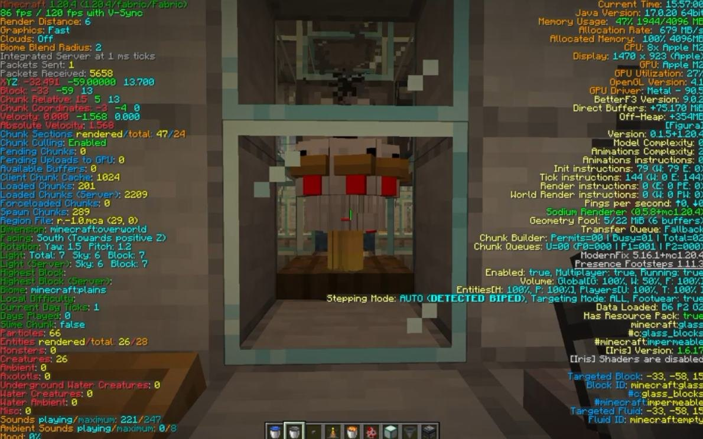
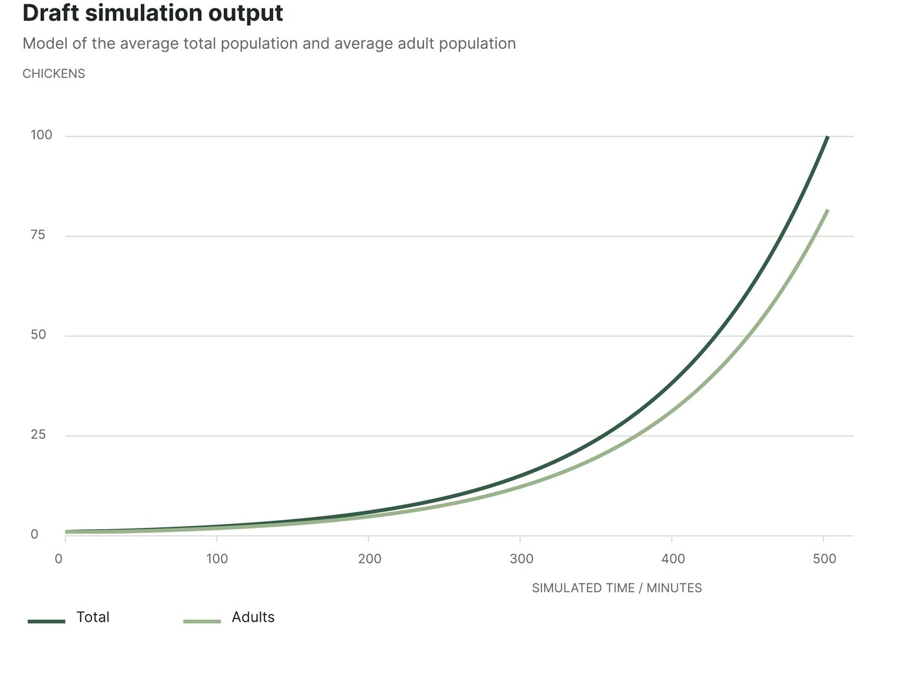
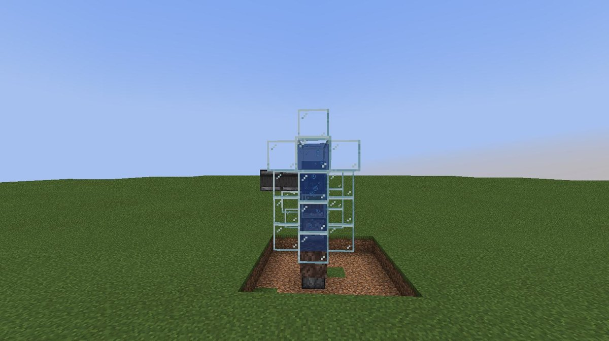
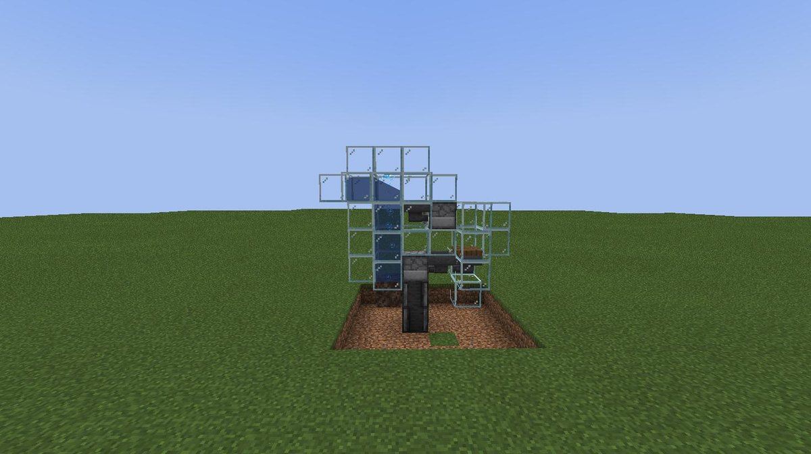
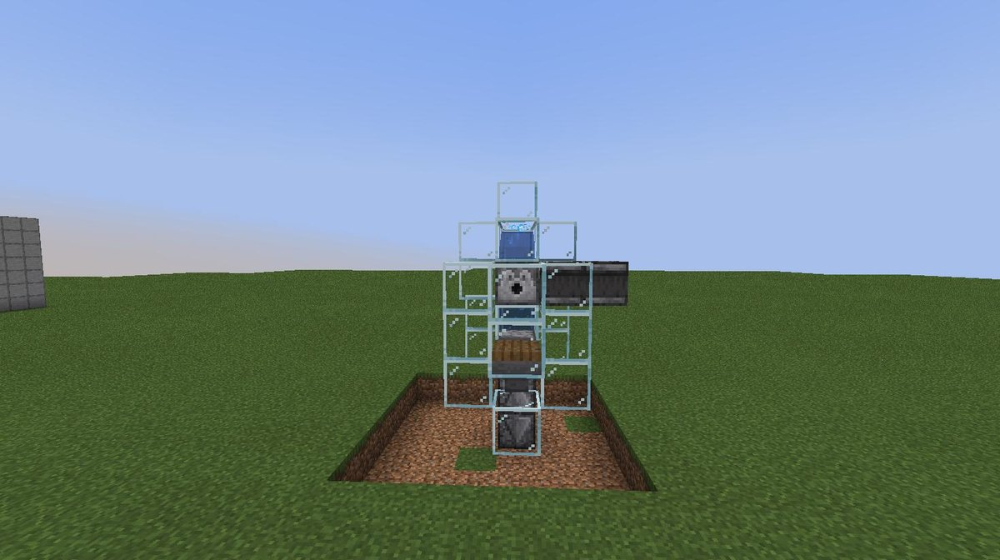
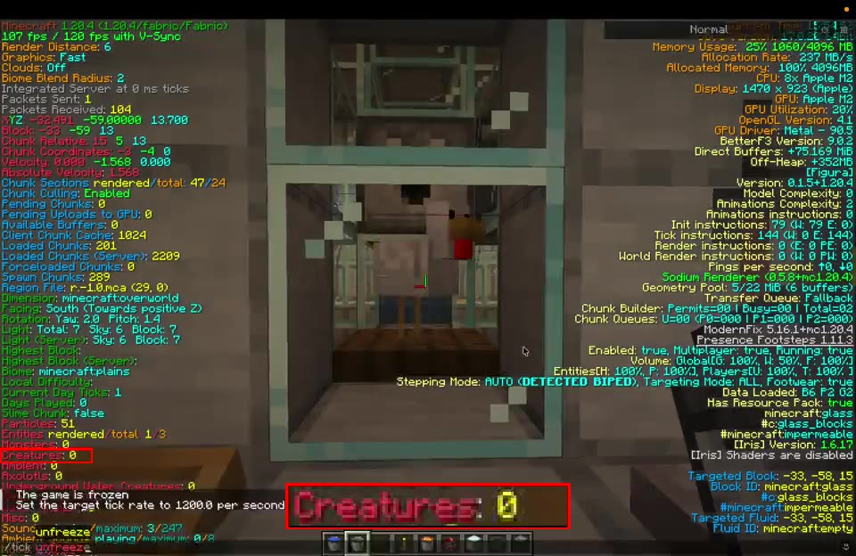
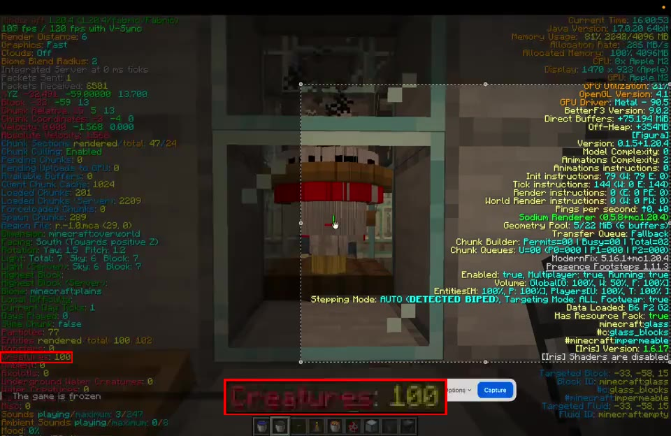

If I have one chicken in Minecraft, and I only use the eggs the chickens lay to make more chickens, how long until I have a hundred? That's the question I chose for my IB maths investigation: hatching probabilities, a Python simulation, and an automated machine in the game to test the prediction. Still in progress.
when 2026
what IB Math AA internal assessment
tools Python · Minecraft
team solo
my part model · simulation · build
status in progress
The question
BandiMinecraft turns a familiar game mechanic into a population-growth problem. More adult chickens produce more eggs, but hatching is random and chicks need time to mature. So: start with one adult, throw every egg it lays, and keep going. How long until there are a hundred?
1 to 100
growth of a population through one adult

inside the machine, debug screen on
The rules that drive growth
5–10 min
Egg-laying interval. Adults lay eggs at random intervals; 7.5 minutes is used as the average.
1 in 8
Chance of hatching. A successful hatch usually creates one chick; rarely, it creates four.
20 min
Maturation delay. A chick cannot lay eggs until it becomes an adult.
no deaths
Model assumptions. Chicks mature naturally and every egg is thrown the moment it's laid.
Probability and population growth
BandiThe model combines the expected number of chicks from each egg with the time those chicks need to mature. Adults and babies are kept separate, because they play different roles in the growth.
BandiA successful hatch has a 1/32 chance of producing four chicks instead of one. Combining the outcomes: E = (31 + 4) / 256 = 35/256 ≈ 0.137 chicks per egg
With one egg every 7.5 minutes, that's an expected 7/384 chicks per adult per minute.
BandiTwo groups are tracked. Adults lay eggs; babies join the adult population after 20 minutes. A short time step updates both groups until their combined population reaches 100.

draft simulation output — average total and adult population over simulated minutes
Testing the model in Minecraft
BandiAn automated setup collects and throws eggs continuously, so the flock grows without me. Faster game time makes repeated trials practical while keeping the same growth rules: /tick rate 1200 instead of the regular 20, so one real second is one game minute, sixty times faster.

the machine

hoppers collect, a dispenser throws

from the back
One trial, sped up
BandiA test run, recorded from inside the machine with the debug screen on so the numbers are visible. The clip is 15× faster than real time; the real run took about six minutes, which at tick rate 1200 is about 366 game minutes. Watch the Creatures counter on the left: it starts at 0 and the recording stops when it reaches 100.
one chicken to a hundred, 15× speed — the red box is the Creatures counter on the debug screen

start — Creatures: 0, tick rate set to 1200

end — Creatures: 100
five planned trials
Reset to one adult chicken each time. Let the machine throw the eggs the adult lays until the total population reaches 100.
record the evidence
Record the population of chickens until it reaches 100. Convert accelerated time back to game minutes.
compare and refine
Compare the model with the trial mean and spread. Check for errors and analyse potential improvements.
Why it's here
BandiIt isn't a game I made. It's my maths coursework, and it's not finished yet. It's here because I got to pick the topic, and I picked a game. Minecraft's chickens follow rules that are published and fixed, which makes them a better population model than most things in real life, and an experiment that would take days on a farm runs in a few minutes of game time. The same habit as everywhere else on this site: find the rules, then play by them.